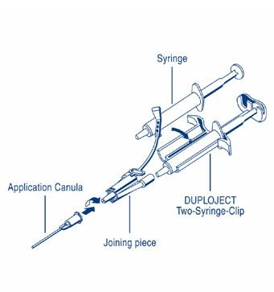

RÉSUMÉ DES CARACTÉRISTIQUES DU PRODUIT
ANSM - Mis à jour le : 15/09/2009
ARTISS, poudres et solvants pour colle, lyophilisées
2. COMPOSITION QUALITATIVE ET QUANTITATIVE
Composant 1:
Solution de protéines pour colle
(Concentré de protéines - Lyophilisé - reconstitué avec une solution d'Aprotinine)
Fibrinogène Humain (en tant que protéine coagulable) ...................................................................... 91 mg1/ml
Aprotinine .............................................................................................................................. 3 000 UIK 2/ml
Composant 2:
Solution de Thrombine
(Thrombine - Lyophilisée - reconstituée avec une solution de Chlorure de Calcium)
Thrombine Humaine ........................................................................................................................ 4 UI3/ml
Chlorure de Calcium .................................................................................................................... 40 µmol/ml
1 ml, 2 ml, 5 ml de Solution de Protéines pour colle et 1 ml, 2 ml, 5 ml de Solution de Thrombine, respectivement, permettent d'obtenir 2 ml, 4 ml, 10 ml de produit fini prêt à l'emploi.
|
Après mélange |
1ml |
2 ml |
4 ml |
10 ml |
|
Composant 1: solution de protéines pour colle |
|
|
|
|
|
|
45,5 mg |
91 mg |
182 mg |
455 mg |
|
Fibrinogène Humain |
|
|
|
|
|
Aprotinine |
1500 UIK |
3 000 UIK |
6 000 UIK |
15 000 UIK |
|
Composant 2: solution de Thrombine |
|
|
|
|
|
Thrombine Humaine |
2 UI |
4 UI |
8 UI |
20 UI |
|
Chlorure de Calcium |
20 µmol |
40 µmol |
80 µmol |
200 µmol |
ARTISS contient du facteur XIII humain copurifié avec le fibrinogène humain à une concentration comprise entre 0,6 et 5 UI/ml.
Pour la liste complète des excipients, voir rubrique 6.1.
1Contenu dans une quantité de protéines totale de 96 - 125 mg/ml
21 UPE (unité pharmacopée européenne) correspond à 1 800 UIK (unité inactivatrice de la Kallicréine)
3L'activité de la thrombine est calculée en utilisant la référence internationale de l'OMS pour la thrombine.
Poudre et solvant pour colle.
Les constituants lyophilisés sont des poudres hygroscopiques, blanches ou jaune pâle ou des solides friables; les constituants liquides sont des solutions limpides et incolores.
4.1. Indications thérapeutiques
ARTISS est indiqué en tant que colle pour tissus pour faire adhérer/ coller des tissus sous-cutanés en chirurgie plastique, reconstructrice et en chirurgie des brûlés, en tant que remplaçant ou complément des sutures ou des agrafes (voir rubrique 5.1). De plus, ARTISS est indiqué en tant qu'adjuvant de l'hémostase sur les surfaces tissulaires sous-cutanées.
4.2. Posologie et mode d'administration
ARTISS est réservé à l'usage hospitalier uniquement, utilisé par des médecins ou chirurgiens expérimentés.
Posologie
La quantité d'ARTISS à appliquer et la fréquence d'application doivent toujours être adaptées aux besoins cliniques du patient.
La quantité à appliquer dépend de variables multiples incluant le type d'intervention chirurgicale, l'importance de la surface à coller, ainsi que le mode et le nombre d'applications souhaités.
L'application du produit doit être envisagée par le médecin en charge du traitement. Lors des essais cliniques, les doses individuelles ont varié généralement entre 0,2 et 12 ml. Pour certaines opérations (par exemple, le collage de grandes surfaces brûlées), des volumes plus importants peuvent s'avérer nécessaires. Lors des essais cliniques, ARTISS n'a pas été administré à des patients de plus de 65 ans.
La quantité initiale de produit à appliquer doit être suffisante pour couvrir entièrement la zone d'application souhaitée. L'application peut être répétée si nécessaire.
A titre indicatif, une boîte d'ARTISS 2 ml (c'est-à-dire 1ml de solution protéinique plus 1 ml de solution de thrombine) suffit pour coller une surface d'au moins 10 cm2.
Pour éviter la formation d'une quantité excessive de tissu de granulation et garantir l'absorption progressive de la colle de fibrine solidifiée, il convient de n'appliquer qu'une fine couche du mélange solution protéinique / solution de thrombine ou de chacun des composants.
Mode et voie d'administration
A usage intralésionnel.
Préparer la solution comme indiqué à la rubrique 6.6.
Avant l'application, la surface de la lésion doit être aussi sèche que possible.
Voir la rubrique 6.6 pour des instructions détaillées.
ARTISS n'est pas indiqué pour remplacer les sutures cutanées destinées à fermer une plaie chirurgicale.
ARTISS seul n'est pas indiqué pour le traitement des hémorragies artérielles ou veineuses massives et abondantes.
ARTISS ne doit jamais être appliqué par voie intravasculaire.
4.4. Mises en garde spéciales et précautions d'emploi
A usage intralésionnel uniquement. Ne pas appliquer par voie intravasculaire.
Des complications thrombo-emboliques mettant en jeu le pronostic vital peuvent survenir en cas d'application intravasculaire accidentelle de la préparation. L'injection d'ARTISS dans les tissus mous risque d'endommager les tissus environnants.
ARTISS n'est pas indiqué pour l'hémostase ni le collage dans les situations où une prise rapide de la colle est nécessaire. En particulier, ARTISS ne doit pas être utilisé pour des opérations cardiovasculaire pour lesquelles un collage d'anastomoses vasculaires est recherché.
ARTISS n'est indiqué ni pour une utilisation en neurochirurgie ni comme soutien aux sutures pour des anastomoses gastro-intestinales ou vasculaires car aucune donnée n'est disponible pour justifier ces indications.
ARTISS ne doit être appliqué qu'en couche fine. Une épaisseur excessive peut réduire l'efficacité du produit et gêner le processus de cicatrisation de la plaie.
Avant d'appliquer ARTISS, il convient de s'assurer que les parties du corps non concernées par l'application sont suffisamment protégées et couvertes pour éviter une adhésion tissulaire sur des sites non souhaités.
Comme avec tout autre produit contenant des protéines, des réactions d'hypersensibilité de type allergique sont possibles. Les signes de réactions d'hypersensibilité peuvent comprendre: urticaire, urticaire généralisée, oppression thoracique, respiration sifflante, hypotension et anaphylaxie. Si ces symptômes surviennent, l'administration doit être immédiatement interrompue.
ARTISS contient une protéine d'origine bovine (aprotinine). Même en cas d'application strictement locale, il existe un risque de réaction anaphylactique liée à la présence d'aprotinine bovine. Ce risque apparaît plus élevé s'il y a eu une exposition antérieure, même si elle a été bien tolérée. En conséquence, toute application d'aprotinine ou de produits à base d'aprotinine doit donc être inscrite dans le dossier du patient.
En cas de réaction anaphylactique ou d'hypersensibilité grave, l'administration doit être interrompue et des mesures d'urgence appropriées doivent être appliquées. En cas de choc, il convient de mettre en place le traitement médical standard du choc.
Les mesures habituelles de prévention du risque de transmission d'agents infectieux par les médicaments préparés à partir de sang ou de plasma humain comprennent la sélection des donneurs, la recherche des marqueurs spécifiques d'infection sur chaque don et sur les mélanges de plasma, ainsi que la mise en œuvre dans le procédé de fabrication d'étapes efficaces pour l'inactivation/élimination virale. Toutefois, lorsque des médicaments préparés à partir de sang ou de plasma humain sont administrés, le risque de transmission d'agents infectieux ne peut pas être totalement exclu. Ceci s'applique également aux virus inconnus ou émergents ou autres pathogènes.
Les mesures prises sont considérées comme efficaces vis-à-vis des virus enveloppés tels que le VIH, le VHB et le VHC, et du virus non enveloppé VHA.
Les mesures prises peuvent avoir une efficacité limitée vis-à-vis des virus non enveloppés tels que le parvovirus B19. L'infection par le parvovirus B19 peut être grave chez les femmes enceintes (infection fœtale) et les personnes atteintes d'un déficit immunitaire ou d'une érythropoïèse accrue (par exemple, anémie hémolytique).
Il est vivement recommandé de consigner le nom et le numéro de lot du produit lors de chaque administration d'ARTISS au patient afin de garder la traçabilité entre le patient et le lot du produit.
4.5. Interactions avec d'autres médicaments et autres formes d'interactions
Aucune étude formelle d'interaction n'a été réalisée. De façon similaire aux autres solutions de thrombine ou aux produits comparables, ce produit peut être dénaturé en cas d'exposition à des solutions contenant de l'alcool, de l'iode ou des métaux lourds (par exemple, solutions antiseptiques). Dans la mesure du possible, ces substances doivent être éliminées avant l'application du produit.
La sécurité de l'utilisation des colles de fibrine/substances hémostatiques n'a pas été établie dans le cadre d'essais cliniques chez la femme enceinte ou en période d'allaitement. Aucune étude n'a été réalisée non plus sur l'animal.
Le produit ne doit donc être prescrit à la femme enceinte ou en période d'allaitement qu'en cas de nécessité absolue.
4.7. Effets sur l'aptitude à conduire des véhicules et à utiliser des machines
Sans objet.
Une injection intra-vasculaire involontaire peut entraîner des événements thromboemboliques et une coagulation intra-vasculaire disséminée. Aussi il existe un risque de réaction anaphylactique (voir rubrique 4.4).
Une hypersensibilité ou des réactions allergiques (pouvant inclure: angioedème, brûlures et démangeaisons au site d'application, bradycardie, bronchospasme, frissons, dyspnée, rougeur, urticaire généralisée, mal de tête, urticaire, hypotension, léthargie, nausée, prurit, agitation, tachycardie, oppression thoracique, picotements, vomissements, respiration sifflante) peuvent survenir dans de rares cas chez des patients traités par des substances hémostatiques/colles de fibrine.
Dans des cas isolés, ces réactions ont évolué vers une anaphylaxie grave. De telles réactions peuvent particulièrement être observées si la préparation est appliquée de manière répétée ou administrée à des patients ayant des antécédents d'hypersensibilité à l'aprotinine (voir rubrique 4.4) ou à d'autres composants du produit.
Même si un premier traitement par ARTISS a été bien toléré, une administration ultérieure d'ARTISS ou une administration systémique d'aprotinine peut entraîner des réactions anaphylactiques graves.
Les composants de la colle de fibrine provoquent rarement la formation d'anticorps.
Pour la sécurité en rapport avec les agents transmissibles, voir la rubrique 4.4.
Les effets indésirables rapportés lors des études cliniques ou après commercialisation sont résumés ci-dessous. Les fréquences connues de ces effets indésirables sont basées sur une étude clinique contrôlée portant sur 138 patients chez lesquels des greffes de peau ont été fixées avec ARTISS sur des plaies excisées de brûlures. Aucun de ces événements n'a été classé comme grave. Les fréquences inconnues sont basées sur des rapports spontanés au cours de la surveillance après mise sur le marché de colles de fibrine commercialisées par Baxter.
Les effets indésirables et leur fréquence sont résumés ci-dessous.
Fréquents (1/100 à <1/10)
Peu fréquent (1/1 000 à <1/100)
Fréquence inconnue (ne peut pas être estimée à partir des données disponibles)
Affections du système immunitaire:
Fréquence inconnue: réactions anaphylactiques, hypersensibilité;
Affections cardiaques:
Fréquence inconnue: bradycardie, tachycardie;
Affections vasculaires:
Fréquence inconnue: hypotension, hématome;
Affections respiratoires, thoraciques et médiastinales:
Fréquence inconnue: dyspnée;
Affections gastro-intestinales:
Fréquence inconnue: nausées;
Affections de la peau et du tissu sous-cutané:
Fréquent*: prurit;
Peu fréquent*: kyste dermique;
Fréquence inconnue: urticaire;
Troubles généraux et anomalies au site d'administration:
Fréquence inconnue: rougeur, troubles de la cicatrisation, œdème, pyrexie;
*Lors des essais cliniques contrôlés ces réactions indésirables sont également survenues au site témoin sans application d'ARTISS.
Lésions, intoxications et complications liées aux procédures:
Fréquents*: échec de la greffe cutanée;
Fréquence inconnue: sérome;
Aucun cas de surdosage n'a été rapporté.
5. PROPRIETES PHARMACOLOGIQUES
5.1. Propriétés pharmacodynamiques
Classe pharmacothérapeutique: hémostatiques locaux, code ATC: B02BC; adhésif tissulaire, code ATC: V03AK
ARTISS peut remplacer les sutures ou les agrafes pour la fixation de greffes de peau sur des zones brûlés ou d'autres lésions. ARTISS peut servir d'adjuvant aux sutures ou aux agrafes quand elles sont susceptibles de donner des résultats insuffisants en ce qui concerne la formation d'hématomes ou de séromes post-opératoires.
Le système d'adhésion de la fibrine initie la dernière phase de la coagulation physiologique du sang. La conversion du fibrinogène en fibrine s'effectue par le fractionnement du fibrinogène en monomères de fibrine et en fibrinopeptides. Les monomères de fibrine s'aggrègent pour former un caillot de fibrine. Le facteur XIIIa, qui est activé à partir du facteur XIII par la thrombine, participe à la création de réseaux de fibrine. Les ions calcium interviennent dans la conversion du fibrinogène et la réticulation de la fibrine.
Lors du procédé de cicatrisation, l'augmentation de l'activité fibrinolytique est induite par la plasmine et la décomposition de la fibrine en produits de dégradation de la fibrine est initiée. La dégradation protéolytique de la fibrine est inhibée par les anti-fibrinolytiques. L'aprotinine est présente dans ARTISS en tant qu'anti-fibrinolytique afin d'éviter la dégradation prématurée du caillot.
Concernant les données d'efficacité, des études in vivo sur un modèle animal reproduisant la situation des patients ont été menées. ARTISS (présentations congelées et lyophilisées) a fait preuve d'efficacité pour le collage de greffes de peau autologues minces et de greffes de tissus.
ARTISS a fait l'objet d'une étude clinique multicentrique, contrôlée, randomisée et prospective concernant la fixation de greffes de peau mince chez des patients brûlés. Deux sites de test comparables ont été identifiés sur chacun des 138 patients. Sur l'un des sites, le greffon de peau a été fixé à l'aide d'ARTISS et, sur l'autre, à l'aide d'agrafes (témoin). ARTISS s'est avéré non-inférieur aux agrafes sur le critère principal d'efficacité; la fermeture complète de la plaie au jour 28 a été évaluée en aveugle par un groupe d'évaluateurs à partir de photographies. Ce résultat a été observé chez 55/127 patients (43,3 %) traités avec ARTISS et 47/127 patients (37 %) ayant reçu des agrafes.
En ce qui concerne les critères secondaires, ARTISS a présenté une incidence et une taille des hématomes et séromes significativement inférieures au premier jour (p < 0,0001 pour l'incidence et la taille). L'incidence et la surface de la prise de la greffe au jour 5, la fermeture de la plaie au jour 14, ainsi que la surface de fermeture de la plaie au jour 28 n'étaient pas différentes. De plus, ARTISS a présenté des résultats supérieurs aux agrafes en termes de satisfaction des patients (p < 0,0001), qui éprouvaient significativement moins d'anxiété qu'avec les agrafes (p < 0,0001). En outre, ARTISS était significativement supérieur aux agrafes en ce qui concerne l'évaluation par l'investigateur de la qualité d'adhérence du greffon, la préférence de la méthode de fixation, la satisfaction pour la fixation du greffon, la qualité globale de la cicatrisation et le taux global de cicatrisation (p < 0,0001).
5.2. Propriétés pharmacocinétiques
ARTISS est indiqué pour un usage intralésionnel uniquement. L'administration intravasculaire est contre-indiquée. Par conséquent, aucune étude de pharmacocinétique intravasculaire n'a été menée chez l'homme.
Aucune étude de pharmacocinétique n'a été menée chez différentes espèces d'animaux de laboratoire.
Les colles de fibrine/substances hémostatiques sont métabolisées de la même manière que la fibrine endogène, par fibrinolyse et phagocytose.
5.3. Données de sécurité préclinique
Aucune donnée de sécurité préclinique n'est disponible pour ARTISS (thrombine 4UI/ml). Les études de toxicité ont été réalisées avec des colles de fibrine contenant de la thrombine 500 UI/ml, représentatives des produits contenant de la thrombine 4 UI/ml. Des études de toxicité en dose unique chez le rat et le lapin n'ont indiqué aucune toxicité aiguë de la colle de fibrine VH S/D (500 UI/ml). La colle de fibrine VH S/D (500 UI/ml) a également été bien tolérée dans les modèles de cicatrisation chez le rat et le lapin ainsi que dans les cultures in vitro de fibroblastes humains.
Composant 1: solution de protéines pour colle
Solution d'albumine humaine
L-Histidine
Nicotinamide
Polysorbate 80 (Tween 80)
Citrate de sodium dihydraté
Eau pour préparations injectables
Composant 2: solution de thrombine
Solution d'albumine humaine
Chlorure de sodium
Eau pour préparations injectables
En l'absence d'études de compatibilité, ce médicament ne doit pas être mélangé avec d'autres médicaments, à l'exception des solvants appropriés mentionnés en 6.6.
2 ans
6.4. Précautions particulières de conservation
Tenir hors de la portée et de la vue des enfants.
A conserver à une température ne dépassant pas 25°C. Ne pas congeler.
Conserver ARTISS dans l'emballage extérieur à l'abri de la lumière.
Utiliser les solutions stériles reconstituées dans les 4 heures. Conserver les solutions stériles reconstituées à 37°C ou à température ambiante sans agitation si elles ne sont pas utilisées immédiatement. Les solutions reconstituées ne doivent pas être réfrigérées ni congelées.
6.5. Nature et contenu de l'emballage extérieur
Tous les composants d'ARTISS sont mis dans des flacons en verre (concentré de protéines pour colle -lyophilisé: verre de type I et de type II, tous les autres flacons: verre de type I) conformes aux exigences de la Pharmacopée européenne. Le flacon contenant le concentré de protéines - lyophilisé est équipé d'un agitateur magnétique.
Chaque boîte d'ARTISS contient:
· 1 flacon de poudre pour colle - composant 1 (lyophilisé) contenant du fibrinogène humain 91 mg/ml
· 1 flacon de poudre pour colle - composant 2 (lyophilisé) contenant de la thrombine 4 UI/ml
· 1 flacon de solvant pour le composant 1 (solution) contenant de l'aprotinine 3 000 UIK/ml
· 1 flacon de solvant pour le composant 2 (solution) contenant du chlorure de calcium 40 µmol/ml
· 1 trousse de reconstitution et d'application (système DUPLOJECT: 4 aiguilles de transfert, 2 seringues à graduation bleue, 2 seringues à graduation noire, 1 double porte-seringue Duploject, 2 pièces de raccordement et 4 canules d'application)
ARTISS est disponible dans les présentations suivantes:
· ARTISS 2 ml
(le produit reconstitué contient 1 ml de solution de protéines pour colle et 1 ml de solution de thrombine)
· ARTISS 4 ml
(le produit reconstitué contient 2 ml de solution de protéines pour colle et 2 ml de solution de thrombine)
· ARTISS 10 ml
(le produit reconstitué contient 5 ml de solution de protéines pour colle et 5 ml de solution de thrombine)
La trousse de reconstitution et d'application (système DUPLOJECT) est à usage unique seulement. Ne pas restériliser !
Toutes les présentations peuvent ne pas être commercialisées.
D'autres accessoires d'application du produit peuvent être obtenu auprès de BAXTER.
6.6. Précautions particulières d’élimination et de manipulation
Pour empêcher l'adhésion d'ARTISS aux gants et aux instruments, humidifier ces derniers à l'aide d'une solution de chlorure de sodium avant contact.
A titre indicatif concernant l'application sur les surfaces, une boîte d'ARTISS 2 ml (c'est-à-dire 1 ml de solution de protéines pour colle plus 1 ml de solution de thrombine) suffira pour coller une surface d'au moins 10 cm2.
La dose nécessaire d'ARTISS dépend de la dimension de la surface à couvrir.
Préparation et reconstitution
Avant reconstitution des composants de la colle de fibrine, les bouchons en caoutchouc de tous les flacons doivent être nettoyés.
Tout contact direct entre le désinfectant et le produit doit être évité (voir rubrique 4.5).
I. Préparation du composant 1 - solution de protéines pour colle
Le concentré de protéines pour colle - lyophilisé est dissout avec la solution d'aprotinine afin de former la solution de protéines pour colle.
Le concentré de protéines pour colle - lyophilisé est reconstitué à l'aide du dispositif de réchauffement et d'agitation FIBRINOTHERM (méthode recommandée). Sinon, un bain-marie stérile à une température comprise entre 33 et 37°C peut être utilisé.
Reconstitution à l'aide du dispositif FIBRINOTHERM:
Le dispositif FIBRINOTHERM maintient une température constante de 37°C. Il réduit également le temps de dissolution du concentré de protéines pour colle - lyophilisé en faisant tourner l'agitateur magnétique contenu dans chaque flacon de concentré de protéines pour colle - lyophilisé.
Placer les flacons contenant le concentré de protéines pour colle - lyophilisé et la solution d'aprotinine dans les ouvertures appropriées du dispositif FIBRINOTHERM préchauffé et faire chauffer les flacons pendant environ 3 minutes.
Transférer la solution d'aprotinine dans le flacon contenant le concentré de protéines pour colle- lyophilisé à l'aide d'une aiguille et de la seringue à graduation bleue fournies dans la trousse stérile pour reconstitution. Placer le flacon de concentré de protéines pour colle dans le puits d'agitation du dispositif FIBRINOTHERM (en utilisant l'adaptateur, si nécessaire) et agiter jusqu'à dissolution complète. La reconstitution est terminée dès qu'il n'y a plus de particules visibles lorsque le flacon est observé à la lumière. En présence de particules, continuer d'agiter la solution à 37°C pendant quelques minutes jusqu'à dissolution complète. Arrêter l'agitateur magnétique une fois la dissolution terminée.
Remarque: Une agitation excessive peut compromettre la qualité du produit !
· Conserver la solution de protéines pour colle à 37°C ou à température ambiante sans agitation si elle n'est pas utilisée immédiatement. Avant utilisation, réchauffer la solution à 37°C. Pour assurer l'homogénéité, faire tourner brièvement la solution de protéines pour colle avant de l'aspirer dans la seringue à graduation bleue fournie dans la trousse avec double emballage stérile pour application.
· Prélever la solution de protéines pour colle reconstituée du flacon dans des conditions stériles.
Pour plus d'informations, consulter les instructions d'utilisation du dispositif FIBRINOTHERM.
Reconstitution à l'aide d'un bain-marie:
· Préchauffer les flacons contenant le concentré de protéines pour colle- lyophilisé et la solution d'aprotinine pendant environ 3 minutes dans un bain-marie à une température comprise entre 33 et 37°C. (Eviter de dépasser 37°C !)
· Transférer la solution d'aprotinine dans le flacon contenant le concentré de protéines pour colle - lyophilisé à l'aide d'une aiguille et de la seringue à graduation bleue fournies dans la trousse stérile pour reconstitution.
· Replacer le flacon de concentré de protéines pour colle dans le bain-marie à une température comprise entre 33 et 37°C pendant une minute.
· Faire tourner brièvement, en évitant la formation excessive de mousse. Replacer ensuite le flacon dans le bain-marie et contrôler périodiquement jusqu'à dissolution complète. La reconstitution est terminée dès qu'il n'y a plus de particules visibles lorsque le flacon est observé à la lumière. En présence de particules, conserver le flacon à 33 - 37°C pendant quelques minutes supplémentaires et agiter la solution jusqu'à dissolution complète.
· Conserver la solution de protéines pour colle à 33 - 37°C ou à température ambiante si elle n'est pas utilisée immédiatement. Avant utilisation, réchauffer la solution à 33 - 37°C. Pour assurer l'homogénéité, faire tourner brièvement avant d'aspirer la solution de protéines pour colle dans la seringue à graduation bleue fournie dans la trousse à emballage stérile.
· Prélever la solution de protéines pour colle reconstituée du flacon dans des conditions stériles.
Remarque: En cas d'utilisation d'un bain-marie pour la reconstitution au lieu du dispositif FIBRINOTHERM, il convient d'être particulièrement attentif à ne pas immerger le flacon, en particulier le bouchon, pour éviter tout risque de contamination.
II. Préparation du composant 2 - solution de thrombine
La thrombine - lyophilisée est dissoute avec la solution de chlorure de calcium afin de former la solution de thrombine. Transférer le contenu du flacon de solution de chlorure de calcium dans le flacon de thrombine - lyophilisée. Utiliser la deuxième aiguille et la seringue à graduation noire fournies dans la trousse stérile pour reconstitution.
Faire tourner brièvement pour dissoudre la substance lyophilisée. Pour réchauffer la solution de thrombine, utiliser le dispositif FIBRINOTHERM ou un bain-marie. Conserver la solution de thrombine à 33 - 37°C ou à température ambiante si elle n'est pas utilisée immédiatement. Avant utilisation, réchauffer la solution à 33 -37°C. Avant utilisation, aspirer la solution de thrombine du flacon à l'aide de la deuxième aiguille et de la seringue à graduation noire fournies dans la trousse avec double emballage stérile pour application.
Remarque: Les seringues et aiguilles utilisées pour la reconstitution d'un composant ne doivent pas être réutilisées pour la reconstitution de l'autre, en raison du risque de solidification de ce composant dans le flacon ou la seringue.
III. Utilisation des composants reconstitués d'ARTISS
Les deux composants de la colle de fibrine doivent être utilisés dans les 4 heures suivant la reconstitution. Les solutions reconstituées ne doivent pas être réfrigérées ou congelées.
La solution de protéines pour colle et la solution de thrombine doivent être limpides ou légèrement opalescentes. Ne pas utiliser de solutions troubles ou présentant des dépôts. Inspecter visuellement les produits reconstitués pour mettre en évidence la présence de particules et un changement de coloration avant administration.
ADMINISTRATION
Pour l'application, fixer les deux seringues jetables contenant la solution de protéines pour colle reconstituée et la solution de thrombine reconstituée dans le double porte-seringue DUPLOJECT et attacher cet ensemble à une pièce de raccordement et une canule d'application. La trousse avec double emballage stérile contient tous les dispositifs nécessaires à l'application.
Le piston commun du double porte-seringue DUPLOJECT garantit l'administration de volumes égaux via la pièce de raccordement, les solutions étant mélangées dans la canule d'application avant administration.
Instructions d'utilisation
Application canula: canule d'application
Joining piece: Pièce de raccordement
Syringe: Seringue
DUPLOJECT Two-Syringe-Clip: DUPLOJECT Double porte-seringue

· Placer les deux seringues remplies avec la solution de protéines pour colle et la solution de thrombine dans le porte-seringue. Les deux seringues doivent être remplies d'un volume égal.
· Connecter les embouts des deux seringues à la pièce de raccordement en s'assurant qu'ils sont fermement fixés. Fixer la pièce de raccordement en attachant la languette au double porte-seringue DUPLOJECT. Si la languette d'attache se déchire, utiliser la pièce de raccordement de rechange. En l'absence de pièce de rechange, une utilisation de la seringue est toujours possible, mais il convient de vérifier l'étanchéité du raccordement afin d'éviter tout risque de fuite.
· Fixer une canule d'application à la pièce de raccordement.
· Ne pas expulser l'air présent dans la pièce de raccordement ou la canule d'application avant de commencer l'application proprement dite, sinon l'ouverture de la canule risque de s'obstruer.
Appliquer le mélange de solution de protéines pour colle et de solution de thrombine sur la surface d'application ou sur la surface des parties à coller.
Si l'application des composants de la colle de fibrine est interrompue, il est possible que la canule s'obstrue par coagulation. Remplacer la canule d'application par une nouvelle canule juste avant la reprise de l'application. Si les ouvertures de la pièce de raccordement sont obstruées, utiliser la pièce de raccordement de rechange fournie dans l'emballage.
L'application est également possible avec d'autres accessoires fournis par BAXTER parfaitement adaptés, par exemple, à la chirurgie peu invasive ou à l'application sur de grandes surfaces ou des zones difficiles d'accès. Lors de l'utilisation de ces dispositifs d'application, respecter scrupuleusement les instructions d'utilisation des dispositifs.
Une fois que les deux composants ont été appliqués, rapprocher les bords de la plaie. Fixer ou maintenir les parties collées en appliquant une pression douce et constante dans la position désirée pendant 3 à 5 minutes afin que la colle de fibrine adhère solidement aux tissus environnants.
Elimination
Tout produit non utilisé ou déchet doit être éliminé conformément à la réglementation en vigueur.
7. TITULAIRE DE L’AUTORISATION DE MISE SUR LE MARCHE
BAXTER SAS
6 AVENUE LOUIS PASTEUR
78310 MAUREPAS
8. NUMERO(S) D’AUTORISATION DE MISE SUR LE MARCHE
· 575 579-5 ou 34009 575 579 5 9: Poudre 1 en flacon (verre de type I ou II) + 1 ml de solvant 1 en flacon (verre de type I) + poudre 2 en flacon (verre de type I) + 1 ml de solvant 2 en flacon (verre de type I) avec une trousse de reconstitution et d'application - boîte de 1.
· 575 580-3 ou 34009 575 580 3 1: Poudre 1 en flacon (verre de type I ou II) + 2 ml de solvant 1 en flacon (verre de type I) + poudre 2 en flacon (verre de type I) + 2 ml de solvant 2 en flacon (verre de type I) avec une trousse de reconstitution et d'application - boîte de 1.
· 575 582-6 ou 34009 575 582 6 0: Poudre 1 en flacon (verre de type I ou II) + 5 ml de solvant 1 en flacon (verre de type I) + poudre 2 en flacon (verre de type I) + 5 ml de solvant 2 en flacon (verre de type I) avec une trousse de reconstitution et d'application - boîte de 1.
9. DATE DE PREMIERE AUTORISATION/DE RENOUVELLEMENT DE L’AUTORISATION
[à compléter par le titulaire]
10. DATE DE MISE A JOUR DU TEXTE
[à compléter par le titulaire]
Sans objet.
12. INSTRUCTIONS POUR LA PREPARATION DES RADIOPHARMACEUTIQUES
Sans objet.
Liste I. Réservé à l'usage hospitalier. L'utilisation d'ARTISS est réservée aux médecins ou chirurgiens expérimentés.